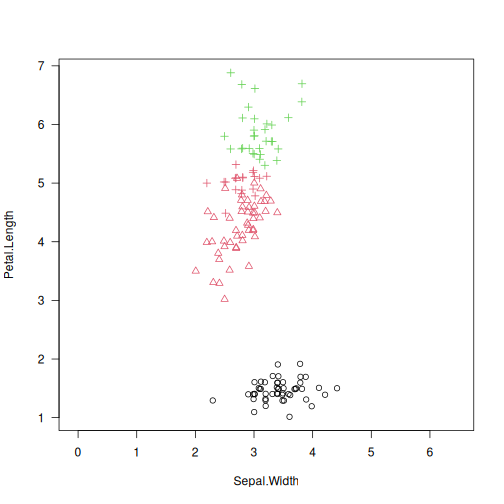

gclust: Hierarchical Clustering Algorithm Genie¶
Description¶
A reimplementation of Genie - a robust and outlier resistant clustering algorithm (see Gagolewski, Bartoszuk, Cena, 2016). The Genie algorithm is based on a minimum spanning tree (MST) of the pairwise distance graph of a given point set. Just like the single linkage, it consumes the edges of the MST in an increasing order of weights. However, it prevents the formation of clusters of highly imbalanced sizes; once the Gini index (see gini_index()) of the cluster size distribution raises above gini_threshold, a forced merge of a point group of the smallest size is performed. Its appealing simplicity goes hand in hand with its usability; Genie often outperforms other clustering approaches on benchmark data, such as https://github.com/gagolews/clustering-benchmarks.
The clustering can now also be computed with respect to the mutual reachability distance (based, e.g., on the Euclidean metric), which is used in the definition of the HDBSCAN* algorithm (see Campello et al., 2013). If M > 1, then the mutual reachability distance \(m(i,j)\) with smoothing factor M is used instead of the chosen “raw” distance \(d(i,j)\). It holds \(m(i,j)=\max(d(i,j), c(i), c(j))\), where \(c(i)\) is \(d(i,k)\) with \(k\) being the (M-1)-th nearest neighbour of \(i\). This makes “noise” and “boundary” points being “pulled away” from each other.
The Genie correction together with the smoothing factor M > 1 (note that M = 2 corresponds to the original distance) gives a robustified version of the HDBSCAN* algorithm that is able to detect a predefined number of clusters. Hence it does not dependent on the DBSCAN’s somewhat magical eps parameter or the HDBSCAN’s min_cluster_size one.
Usage¶
gclust(d, ...)
## Default S3 method:
gclust(
d,
gini_threshold = 0.3,
distance = c("euclidean", "l2", "manhattan", "cityblock", "l1", "cosine"),
cast_float32 = TRUE,
verbose = FALSE,
...
)
## S3 method for class 'dist'
gclust(d, gini_threshold = 0.3, verbose = FALSE, ...)
## S3 method for class 'mst'
gclust(d, gini_threshold = 0.3, verbose = FALSE, ...)
genie(d, ...)
## Default S3 method:
genie(
d,
k,
gini_threshold = 0.3,
distance = c("euclidean", "l2", "manhattan", "cityblock", "l1", "cosine"),
M = 1L,
postprocess = c("boundary", "none", "all"),
detect_noise = M > 1L,
cast_float32 = TRUE,
verbose = FALSE,
...
)
## S3 method for class 'dist'
genie(
d,
k,
gini_threshold = 0.3,
M = 1L,
postprocess = c("boundary", "none", "all"),
detect_noise = M > 1L,
verbose = FALSE,
...
)
## S3 method for class 'mst'
genie(
d,
k,
gini_threshold = 0.3,
postprocess = c("boundary", "none", "all"),
detect_noise = FALSE,
verbose = FALSE,
...
)
Arguments¶
|
a numeric matrix (or an object coercible to one, e.g., a data frame with numeric-like columns) or an object of class |
|
further arguments passed to other methods. |
|
threshold for the Genie correction, i.e., the Gini index of the cluster size distribution; Threshold of 1.0 disables the correction. Low thresholds highly penalise the formation of small clusters. |
|
metric used to compute the linkage, one of: |
|
logical; whether to compute the distances using 32-bit instead of 64-bit precision floating-point arithmetic (up to 2x faster). |
|
logical; whether to print diagnostic messages and progress information. |
|
the desired number of clusters to detect, |
|
smoothing factor; |
|
one of |
|
whether the minimum spanning tree’s leaves should be marked as noise points, defaults to |
Details¶
Note that, as in the case of all the distance-based methods, the standardisation of the input features is definitely worth giving a try.
If d is a numeric matrix or an object of class dist, mst() will be called to compute an MST, which generally takes at most \(O(n^2)\) time (the algorithm we provide is parallelised, environment variable OMP_NUM_THREADS controls the number of threads in use). However, see emst_mlpack() for a very fast alternative in the case of Euclidean spaces of (very) low dimensionality and M = 1.
Given an minimum spanning tree, the algorithm runs in \(O(n \sqrt{n})\) time. Therefore, if you want to test different gini_thresholds, (or ks), it is best to explicitly compute the MST first.
According to the algorithm’s original definition, the resulting partition tree (dendrogram) might violate the ultrametricity property (merges might occur at levels that are not increasing w.r.t. a between-cluster distance). gclust() automatically corrects departures from ultrametricity by applying height = rev(cummin(rev(height))).
Value¶
gclust() computes the whole clustering hierarchy; it returns a list of class hclust, see hclust. Use cutree to obtain an arbitrary k-partition.
genie() returns a k-partition - a vector with elements in 1,…,k, whose i-th element denotes the i-th input point’s cluster identifier. Missing values (NA) denote noise points (if detect_noise is TRUE).
References¶
Gagolewski M., Bartoszuk M., Cena A., Genie: A new, fast, and outlier-resistant hierarchical clustering algorithm, Information Sciences 363, 2016, 8-23, doi:10.1016/j.ins.2016.05.003.
Campello R.J.G.B., Moulavi D., Sander J., Density-based clustering based on hierarchical density estimates, Lecture Notes in Computer Science 7819, 2013, 160-172, doi:10.1007/978-3-642-37456-2_14.
Gagolewski M., Cena A., Bartoszuk M., Brzozowski L., Clustering with minimum spanning trees: How good can it be?, Journal of Classification, 2024, in press, doi:10.1007/s00357-024-09483-1.
See Also¶
The official online manual of genieclust at https://genieclust.gagolewski.com/
Gagolewski M., genieclust: Fast and robust hierarchical clustering, SoftwareX 15:100722, 2021, doi:10.1016/j.softx.2021.100722.
mst() for the minimum spanning tree routines.
adjusted_rand_score() (amongst others) for external cluster validity measures (partition similarity scores).
Examples¶
library("datasets")
data("iris")
X <- iris[1:4]
h <- gclust(X)
y_pred <- cutree(h, 3)
y_test <- iris[,5]
plot(iris[,2], iris[,3], col=y_pred,
pch=as.integer(iris[,5]), asp=1, las=1)

adjusted_rand_score(y_test, y_pred)
## [1] 0.8857921
pair_sets_index(y_test, y_pred)
## [1] 0.9049708
# Fast for low-dimensional Euclidean spaces:
# h <- gclust(emst_mlpack(X))